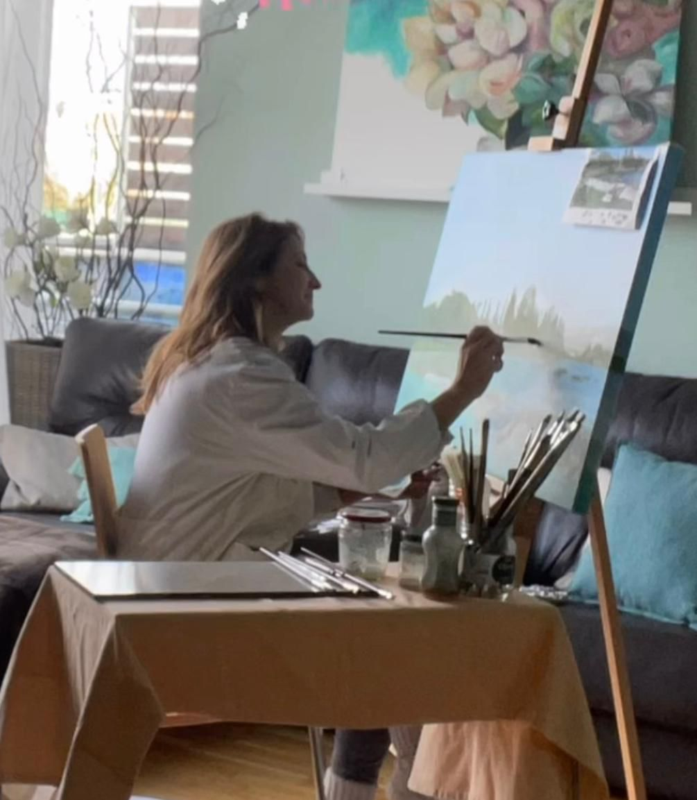

Sobre mi
Siempre he sabido que mi forma de expresarme pasa por la pintura. Desde muy joven, los pinceles y la creatividad me han atraído de forma especial. Empecé explorando la técnica del óleo, con el tiempo llegaron el acrílico y la acuarela.
Hoy, uniendo mi trayectoria artística con mi pasión por la decoración, he encontrado mi sello personal: crear obras que van más allá del lienzo, entendiendo cada pintura como una pieza decorativa única y lista para hacer de tu rincón preferido un espacio elegante, acogedor y único.
¿Qué hace especial una obra de Iciar Ochoa?
En mis piezas no solo encontrarás los pigmentos del óleo, acrílico o acuarela. En los montajes, me gusta integrar elementos que aporten calidez y un punto diferenciador:
• Texturas: Que crean juegos de luces y sombras que cambiarán su visión con las distintas luces del día y la noche.
• Tejidos de lino: que aportan calidez y elegancia.
• Cuerdas y fibras naturales: Que aportan un toque artesanal y orgánico.
• Maderas seleccionadas: Marcos que abrazan la obra y la elevan para dar un toque de distinción.
Exposiciones
2026 · Poderío Market, Hotel Tres Reyes, Pamplona
2026 · La Hacienda, Mutilva
2025 · Âme & Art, Ciudadela Pamplona
2025 · Centro SIC, c/ Leyre
2025 · Cafetería Leiho, c/ Javier
2024 · Nuevo Casino Iruña, Plaza del Castillo